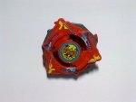

Trygle 2 G
| Trygle 2 G | |
|  | |
| Number: | G-209 |
|---|---|
| System: | 5-Layer/Engine Gear |
| Type: | Attack |
Contents
Trygle 2 G is the Hasbro version of Trygle 2, and was released as a starter in their G-Revolution line. The Attack Ring is the same as Trygle 2's, while the Weight Disk, Spin Gear, Blade Base and Customize Engine Weight are those of Dragoon GT. The Attack Ring and Blade Base are colored Reddish-Brown, as opposed to the Orange Sunshine of the prize Trygle 2 in Takara's Random Booster 9.
Attack Ring (AR): Triple Beak
- Weight: 5 grams
Triple Beak depicts three eagle heads in a triangular formation reminiscent of Trycutter. The main contact points of Triple Beak in either spin direction are the sides of each triangular eagle head, and like all Attack Rings which use large, flat areas as contact points,Triple Beak produces large amounts of Recoil and very little else, rendering it useless for any sort of competitive customization. Furthermore, Triple Beak is a rather thin Attack Ring, and combined with its large, flat contact points this results in breakage issues, which are only compounded by the price and rarity of the part. As a result of these many issues, Triple Beak should not be considered for competitive use.
Weight Disk (WD): Ten Wide
See Ten Wide
Spin Gear (SG): Left Engine Gear (Turbo)
- Weight: 7 grams
The Turbo Left EG is a successor to the Normal Left EG, providing a release four times stronger than its predecessor (albeit over a shorter time period). As with most Engine Gears, it is generally avoided due to tall height and impractical bases. The high speed of the Turbo Left EG has use in One-Hit Knockout combinations, though these combinations are, by definition, quite risky and unreliable.
Use in OHKO Customization
- AR: Spike Dragon (Dragoon V2)
- WD: 10 Heavy
- SG: Left Engine Gear (Turbo)
- BB: First Clutch Base (Dragoon G Version)
- CEW: Metal Semi Flat (Dranzer GT)
This is a standard OHKO Attacker: High Power, High Recoil AR, fast movement, and everything else focused on surviving its own Recoil. Such combinations are generally not used for serious play, but if you have nothing better, and are sure your opponent will play an easily knocked out Beyblade, it can be used successfully.
Customize Engine Weight (CEW): Metal Grip
- Weight: 3 grams
The Metal Grip CEW, as the name suggests, is a metal Tip with a rubber coating, increasing grip with the stadium floor. However, due to its relatively heavy weight and the grip produced, it tends to anchor combinations it is used in, slowing their movement. This property does give it some minor use in Defensive customizations, however it is heavily outclassed by Wolborg 2?s SG (Bearing Version 2) and even Defense Grip Base (Seaborg), due to its tall height, poor Stamina, and lack of any suitable Engine Gears or Blade Bases that would make it worthwhile.
Blade Base (BB): First Clutch Base (Dragoon GT Version)
- Weight: 7 grams
Like all First Clutch blade bases, Trygle 2 G's base releases the engine gear at the start of the battle. The Base has four protrusions, all of which are rather large and flat (similar in shape to Dragoon V2?s Spike Dragon AR). These protrusions, whilst providing some Smash Attack, generally produce a lot of Recoil, meaning they are just as likely to cause self-KO as they are to KO the opponent. Generally, its use is limited to OHKO combinations, though as the protrusions can cause breakage issues, it is often best to simply not use this base at all.
Other Versions
- Trygle 2 (Takara Release)
- Dragoon GT
Gallery
-
Upper View
-
Blade Base 2/3 View
-
Parts
-
Left Engine Gear Turbo (Trygle 2 G Ver.)
-
2/3 View
-
Blade Base Upper View
-
Bottom View
Overall
Trygle 2 G is simply a reddish-brown Dragoon GT with a different Attack Ring and stickers. However, while G Upper is the most useful part of Dragoon GT, Triple Beak is not a competitive part, and as a result, Trygle 2 G has no notable competitive uses. That said, Trygle 2 G is quite rare, and as such, is prized by collectors. Overall, this Beyblade is only worth purchasing for collection purposes.